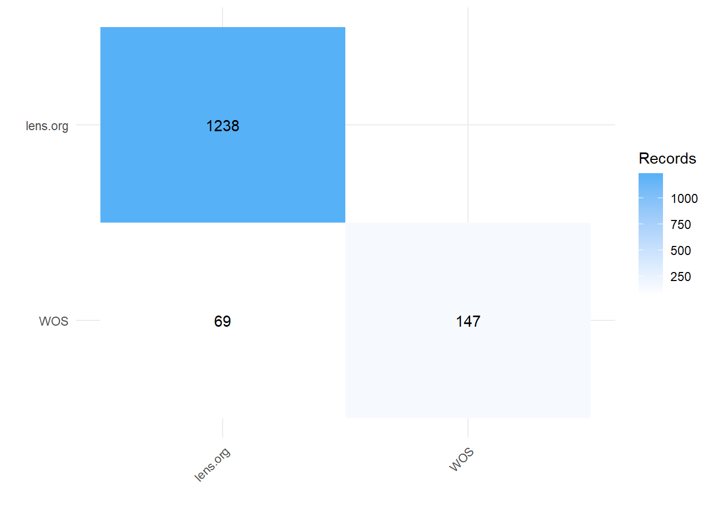

#https://github.com/ESHackathon/CiteSource
#remotes::install_github("ESHackathon/CiteSource")
library(CiteSource)
#Import citation files from a folder
citation_files <- list.files(path = file.path("data"), full.names = TRUE)
citations <- read_citations(citation_files,
cite_sources = c("lens.org", "WOS"),verbose = FALSE)Which shortcuts are really shortcuts in systematic reviews?
TL;DR
Reviews in ecology often take short-cuts in the review process - the effect this has on the risk of bias is unknown and could be quite severe. A recent paper showed (in health) that some short-cuts can be carried out with minimal effect on the review. Many ecological reviews make short-cuts that can actually increase the risk of bias.
This post was inspired by the recent ESHackathon event hosted by the Innovation Observatory at Newcastle University where one of the projects was to update PredicTER so that we can predict the potential time saving of different common short-cuts used in rapid reviews.
1 Rapid reviews
There is a clear demand from policy-makers for rapid evidence synthesis. “Rapid Reviews” are a type of systematic review where one or more of the review processes are simplified, sped-up (through, for example, AI tools to assist screening) or completely omitted. There is not a unified definition of what a “Rapid Review” is, and authors tend to take different “short-cuts” depending on resource constraints or the knowledge/experience of the review team.
A paper published in Research Synthesis Methods, Haby et al. (2023) addresses this heterogeneity in short-cuts used for Rapid Review and assess where possible the evidence about the risk of bias associated with each.
Haby et al. (2023) provide a really useful guide to what short-cuts one can take in a Rapid Review. Their Table 2 (recreated below) lists each commonly used short-cut and the potential impact on the risk of bias.
| Possible “short-cuts” categorised by review step | Recommended (yes/no) | Potential impact on risk of bias if done | Supporting evidence within Haby et al. |
|---|---|---|---|
| Preparation of a protocol | |||
| Omit protocol | No | ↑ | ✗ |
| Prepare a protocol and make publicly available (e.g., PROSPERO or Open Science Framework). Limit included information to the key aspects that allow a complete assessment of risk of bias (with AMSTAR 2 or ROBIS). | Yes | ↓ | ✗ |
| Question formulation | |||
| Limit the number of questions and sub-questions and limit the scope of the question/s | Yes | None expected | ✗ |
| Limit the number of outcomes | Yes | None expected | ✗ |
| Inclusion criteria | |||
| Limit publication language to English but provide justification | Yes | Minimal | ✓ |
| Exclude gray/unpublished literature but provide justification and note that it may lead to an overestimation of effect | Yes | Minimal | ✓ |
| Restrictions based on publication date, for example, last 5, 1 , or 2 years (unless it is known that relevant studies could only have been reported since a specific date) | No | ↑ | ✓ |
| Limit to papers available electronically | No | ↑ | ✓ |
| Restrict study types to systematic reviews | Yes | None expected | ✗ |
| Restrict study types to randomized controlled trials or controlled clinical trials | |||
| Searching | |||
| Use of a single database for searching (e.g., PubMed) | No | ↑ | ✓ |
| Limit number of databases searched to at least two and one supplementary source (e.g., reference lists of included studies). If searching for RCTs search Medline/PubMed, EMBASE, and CENTRAL). | Yes | None | ✓ |
| Use the Polyglot Search Translator to translate search strings across multiple databases, though noting its limitations: https://sr-accelerator.com/#/help/polyglot | Yes | None | ✓ |
| Use of the Cochrane RCT Classifier for systematic reviews of RCTs to reduce screening burden (if available for your review)a | Yes | None | ✓ |
| Use of existing methodological filters for observational or diagnostic studies | No | ↑ | ✓ |
| Selection | |||
| One reviewer screens titles and abstracts | No | ↑ | ✓ |
| Title-only screening using keyword searches based on population, intervention, and comparison (PICo) | No | ↑ | ✓ |
| One reviewer selects based on full text | No | ↑ | ✓ |
| Use of dual computer monitors for selection | No | None | ✓ |
| Data extraction | |||
| One reviewer extracts data | No | ↑ | ✓ |
| One reviewer extracts data with verification by a second reviewer | Yes | Minimal | ✓ but evidence is limited |
| Data extraction limited to key characteristics, results, conflicts of interest | Yes | None expected | ✗ |
| Use of dual computer monitors for data extraction | Yes | None | ✓ |
| Use of Google Translate for data extraction from non-English trials | No | ↑ | ✓ |
| Not contacting study authors to obtain missing information | Yes | Minimal | ✓ |
| Risk of bias assessment | |||
| Limit or omit risk of bias assessment | No | ↑ | ✗ |
| Not using blinding for risk of bias assessment | Yes | None | ✓ |
| One reviewer does risk of bias assessment | No | ? | ✗ |
| One reviewer does risk of bias assessment with checking by a second reviewer | ? | ? | ✗ |
| Omit assessment of reporting/publication bias | ? | ? | ✗ |
| Synthesis | |||
| Narrative synthesis only (no meta-analysis) | Yes | None | ✗ |
| If data and time permit conduct a meta-analysis of one primary outcome only | Yes | None | ✗ |
| Reporting | |||
| Include a methods section, even if added as an appendix | Yes | ↓ | ✗ |
| Limit included information to the key aspects that allow a complete assessment of risk of bias (with AMSTAR 2 or ROBIS) | Yes | None | ✗ |
| Consider using a checklist to report the key aspects of the methods rather than narrative reporting | Yes | None | ✗ |
1.1 What does this mean for ecological reviews?
In ecology authors of reviews (sometimes incorrectly labelled systematic reviews or meta-analysis) often take short-cuts such as only searching a single source, not assessing risk of bias or using only single reviewers (see this great paper by Haddaway et al. 2020 for a list of common problems with reviews and how to fix them).
What strikes me from Haby et al. (2023) is that most of the short-cuts authors take in ecology are those that increase the risk of bias. For example, it is common to see a statement such as this in ecological reviews:
“We conducted a search of the ISI Web of Science database* on [DATE], using the following key words…”
*WOS is NOT a database
It is important to note that the Web Of Science platform is not a database, but rather a collection of databases. Each institution might have different subscriptions. Thus it is important that review authors list the databases that their institution has access to.
Searching a single source increases the risk of bias because not all journals are indexed on each platform. A quick look at the results from two sources will show you that there are always (sometimes quite large) differences between the results of a search. For example, searching for peer-reviewed articles on Lake spawning Brown Trout in Web of Science (WOS) versus searching in Lens.org leads to a total of 1385 records, but only 69 of these are duplicated across the sources. If we only used WOS there is a risk that we might miss important evidence.
#Deduplicate citations.
unique_citations <- dedup_citations(citations)
#Count number of unique and non-unique citations from different sources
n_unique <- count_unique(unique_citations)
#For each unique citation, determine which sources were present
source_comparison <- compare_sources(unique_citations, comp_type = "sources")
#Generate source comparison heatmap
plot_source_overlap_heatmap(source_comparison)
I also found it interesting that dropping grey literature from a review can have minimal effect (although it is noted that the effect size might be overestimated) on the risk of bias. I wonder if grey literature is more important in ecology than in health? In ecology we have a large number of commissioned reports or “unpublished” reports (technical reports from NGOs etc. might be “unpublished” but still widely available on websites) that are important sources of evidence. For example, in a systematic review by Bernes et al.(2015) grey literature made up over 20% of the studies included in the synthesis. This represents a large proportion of the evidence-base in this particular case.
Haby et al. (2023) suggest that limiting the search to English language publications has a minimal effect on the potential risk of bias. The evidence that Haby et al. (2023) base their suggestion on is from epidemiology and health technology (Morrison et al. 2012, Nussbaumer-Streit et al. 2019). In ecology a relatively large proportion of studies on the effectiveness of biodiversity conservation interventions are in a non-English language (see this great paper that addresses this issue - Amano et al. 2021).
Ignoring grey literature or non-English studies in ecological reviews would most likely have a high potential impact on the risk of bias.
2 Conclusion
Ecological reviews often take short-cuts that increase the risk of bias in the reported findings - it is important that we recognise this risk and highlight it to stakeholders and policy makers.